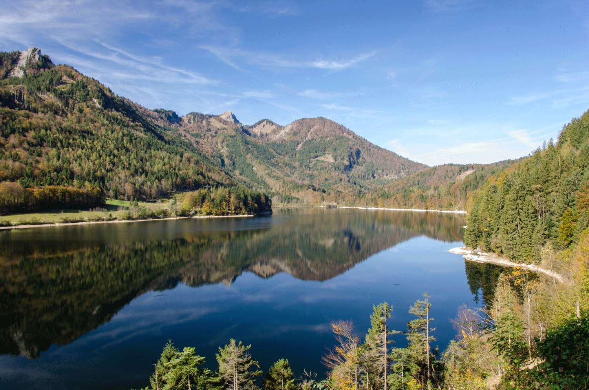

Welcome to Fish Haven, Idaho!

Weather Summary
Currently: Cloudy
High: 47°F
Wind Chill: °F
Humidity: 54%
Wind Speed: 7 mph
5 Day Forecast
| Monday | Tuesday | Wednesday | Thursday | Friday |
|---|---|---|---|---|
 |
 |
|
|
 |
| 49°F | 56°F | 53°F | 49°F | 56°F |
A dangerous cocktail threatens the gem of North Idaho
by Emily Benson
Source: https://www.hcn.org/issues/51.11/pollution-a-dangerous-cocktail-threatens-the-gem-of-north-idaho 
Early this spring, a migrating flock of tundra swans flew toward a long and narrow body of water in North Idaho marked on today’s maps as Coeur d’Alene Lake, seeking a stopover on their way north.
From a few thousand feet, the birds would have seen the expanse of the lake, surrounded by forested hills and shaped roughly like a human arm. Near the elbow, they would have flown over the political boundary marking the edge of the Coeur d’Alene Tribe’s reservation, which encompasses the southern third of the lake. To the north, the swans, thousands of them, would have glimpsed the high-rises of the resort town of Coeur d’Alene at the lake’s edge, and the lake’s outlet, the Spokane River, winding west. They would have passed sandy beaches and rocky peninsulas dotted with marinas, parks, homes and resorts, and the Coeur d’Alene River, which meets the lake at Harrison Slough. It is an appealing place to alight — and a lethally toxic wetland.
Indeed, many of the swans stopped at the slough. There, they stretched their long necks under the water, digging into contaminated sediment with their beaks to root up edible plants and invertebrates. And then, just as dozens of tundra swans do every year, many of them died, poisoned by the lead and other heavy metals in the mud, a legacy of Idaho’s hard rock mining.
As attractive as it appears, the landscape around Coeur d’Alene Lake can be lethal to animals, and dangerous to humans. The local health district warns people who swim, boat and barbecue along the picturesque lower Coeur d’Alene River to brush dirt from their pets, shoes and camping gear, so they don’t track lead-laced dust into their homes.
But the area’s mining past has left an additional, and largely invisible, legacy. Far below the surface of the lake lies another threat: 75 million metric tons of contaminated sediment, lining most of the lakebed. While the pollution in the watershed is the focus of a massive and ongoing cleanup led by the Environmental Protection Agency, protecting the health of the lake itself has been left to the state of Idaho and the Coeur d’Alene Tribe. The flaws of that approach — exacerbated by mistrust, political calculations and disagreements over cleanup obligations — are now imperiling both the lake and the life that depends on it, human and nonhuman alike.
Follow the source link above to read the remainder of this article.

Community Weather
196 N. State Street
Preston, ID 83263
(208)555-5555
communityweather@gmail.com